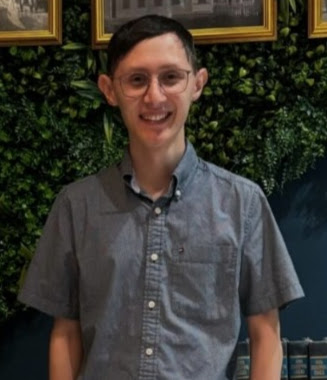

Photo of Javier Arroliga on vacation visitng family
Personal Background: I was born in Miami, Florida but moved to Knightdale, NC when I was 4 and have lived there ever since. After taking a coding camp at NC State I grew to like programming and wanted to pursue that as a career. When not at school I’m usually taking care of family, hanging out with friends, or playing video games.
Professional Background: During my years at community college before UNCC I worked at my local Food Lion and later the Office Max as a cashier so that I could save up money. I used to volunteer at a Karate school and help teach the younger students martial arts and self defense during high school.
Academic Background: I graduated high school Spring of 2020 and went to UNCC however because of COVID and personal matters I returned home to do community college instead. After a couple years I came back with enough credits to be a junior and should be graduating in the Fall of ‘25.
Primary Computer Platform: Windows 10 PC and Laptop
Courses I'm Taking, & Why:
ITSC - 3146 Intro to Operating Systems & Networking: Required class but it teaches valuable information regarding how an OS works and how to program more effectively
ITIS - 3135 Web-Based Application Design & Development: While i wanted to get into corporate software, I viewed being a freelance webdeveloper as a good fall back so I was really interested in taking this class
ITIS - 3130 Introduction to Human-Centered Computing: Teaches important lessons in making websites and software more readable and accessible to anyone who would use it.
ITIS - 3200 Intro to Info Security & Privacy: Required class but teaches the basics of cybersecurity